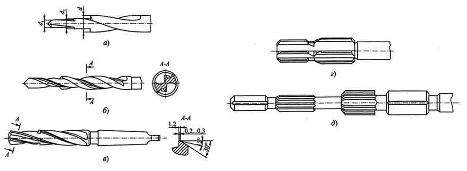
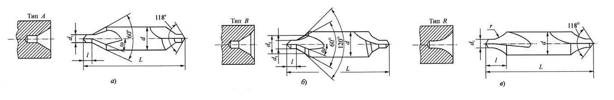

Комбинированные инструменты - это соединение двух и более одно- или разнотипных инструментов, закрепленных на одном корпусе, которое позволяет за один проход совмещать несколько операций или переходов. Благодаря этому значительно сокращается машинное и вспомогательное время и повышается производительность процесса обработки отверстий. Эти инструменты применяются на сверлильных, револьверных, расточных, агрегатных станках, токарных автоматах, автоматических линиях и обрабатывающих центрах.
При обработке цилиндрических отверстий широко используются комбинированные инструменты, являющиеся соединениями инструментов разных типов: сверло - зенкер, сверло - метчик, сверло - развертка, зенкер - развертка и др.
При обработке ступенчатых отверстий применяются соединения однотипных инструментов: ступенчатые сверла, зенкеры, развертки и др. При этом значительно уменьшается отклонение от соосности ступеней и повышается точность размеров между торцами обработанных поверхностей. Число ступеней в таких инструментах может доходить до шести, а число объединенных элементарных инструментов - до пяти. Выбор числа ступеней определяется требованиями достижения наибольшей производительности, точности и низкой шероховатости обработанных отверстий. Диаметры промежуточных ступеней инструмента назначают в зависимости от вида ступеней, величины снимаемого припуска, а также от схемы распределения припуска между ступенями. Диаметр последней ступени рассчитывают с учетом допуска на диаметр обработанного отверстия, величины его разбивки или усадки и допуска на износ инструмента.
Число зубьев у комбинированных инструментов с целью удобства измерения при контроле диаметра принимается четным и берется в зависимости от припуска на обработку, условий отвода стружки и величин сил и крутящих моментов, действующих на инструмент.
Для обеспечения надежного отвода стружки увеличивают размеры и угол наклона стружечных канавок, применяют стружкодробящие устройства и внутреннее напорное охлаждение. При этом стружкоотводящие канавки каждой ступени должны плавно сопрягаться с канавкой последующей ступени, не создавая препятствий для отвода стружки.
Ступенчатые сверла применяют в основном двух вариантов: все ступенчато расположенные части разных диаметров сверла имеют одну общую канавку (а); каждая из составляющих частей сверла имеет свои стружечные канавки по длине рабочей части инструмента (6).
Из них сверла первого варианта значительно проще в изготовлении, чем сверла второго варианта, но имеют меньший запас на переточку.
Для надежного направления сверла при обработке отверстий с помощью кондукторной втулки длину сверла меньшего диаметра необходимо делать не более 3d. Угол наклона стружечных канавок назначают по наибольшему диаметру сверла с учетом свойств обрабатываемого материала. Сверла диаметром 3...10 мм изготавливают с цилиндрическим хвостовиком, а диаметром более 6 мм г с коническим хвостовиком.
Ступенчатый зенкер (в) должен иметь канавки, объем которых позволял бы надежно отводить
стружку от обеих ступеней зенкера. С целью облегчения заточки ступенчатые зенкеры часто делают
сборными. При этом первую ступень зенкера выполняют в виде отдельного зенкера, снабженного
коническим хвостовиком, входящим в соответствующее коническое отверстие зенкера, который
предназначен для обработки второй ступени.
Применяют ступенчатые сборные зенкеры со
вставными ножами, а также оснащенные твердосплавными СМП.
Ступенчатая развертка (г) представляет собой инструмент для совмещенной обработки нескольких отверстий, расположенных соосно.
Для повышения точности обработки комбинированные развертки снабжают передними и (или) задними направляющими (д) либо направляющими, расположенными в средней части развертки.
При токарной обработке для получения центровых отверстий широко применяются комбинированные центровочные сверла. В зависимости от формы центровых отверстий центровочные сверла делятся на типы: А, В, R и др. Центровочные сверла представляют собой комбинацию двух инструментов: сверла и зенкера - и состоят, соответственно, из сверловочной и зенковочной частей. С целью повышения общей стойкости центровочные сверла изготавливают двухсторонними.
Стружечные канавки центровых сверл винтовые, наклонные под углом ω = 5° к оси инструмента. Профиль сечения канавок прямолинейный с углом 90... 110°. Ленточка на сверловочной и зенковочной частях отсутствует. Вместо нее спинку затылуют по архимедовой спирали. При этом величина спада затылка обеспечивает в сечении, перпендикулярном к оси инструмента, задний угол α = 1...2°.
Диаметр сердцевины центровочного сверла d0 = (0,20...0,25)d1 и увеличивается по направлению к зенковочной части на 0,25...0,40 мм на каждые 25 мм длины, а диаметр сверловочной части уменьшается в этом же направлении на 0,05...0,10 мм на 25 мм длины. Заточка вершины сверловочной части центровочного сверла аналогична заточке спиральных сверл.
Зенковочная часть имеет форму режущих кромок, обеспечивающих получение конусных участков центровых отверстий. У сверл типа В предусмотрены режущие кромки для обработки предохранительной фаски. Передняя поверхность зенковочной части является продолжением передней поверхности сверловочной части, а задняя поверхность затылуется одновременно с затылованием спинки сверловочной части. У сверл типа R режущие кромки зенковочной части выполнены по радиусу. Такая форма центровых отверстий обеспечивает лучшую самоустановку валов в центрах и повышенную прочность сверл.